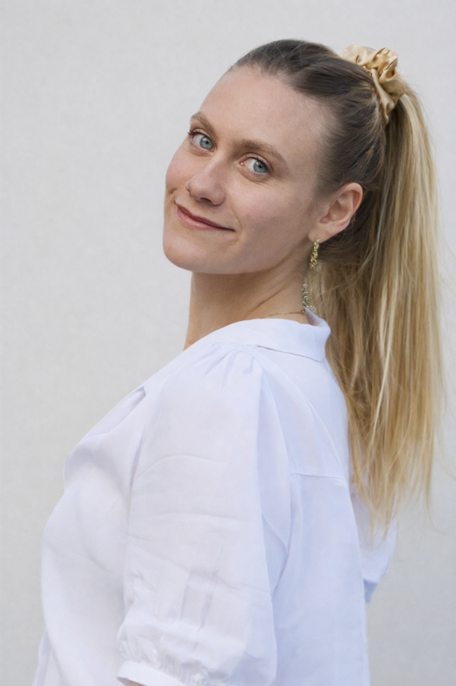

Modalities
🧬 Targeted proteomics
🏥 Electronic healthcare records
⌚ Wearable data
🏠 Remote monitoring data

PhD student at Imperial College London working across proteomics, electronic health records, and wearable data to build predictive, interpretable models for Parkinson's disease and related clinical monitoring problems.
I work on modelling problems where the artifact matters as much as the idea: calibrated prediction, multimodal fusion, interpretable outputs, and tools that can be inspected through papers, demos, and case studies rather than abstract claims.
Research spanning predictive modelling, deep learning, and clinical translation.
Develop machine learning approaches for Parkinson's disease prediction from plasma proteomics and evaluate how the signal generalizes across datasets.
Learn shared patient representations from structured EHR and proteomics to improve subgroup discovery and prediction.
Detect and inspect agitation episodes in dementia using remote monitoring signals and an interactive demo.
Characterize heterogeneous agitation patterns from longitudinal in-home monitoring data.
This project explores whether plasma proteomics can support Parkinson's disease prediction and whether machine learning models can recover clinically meaningful signal from large-scale biomedical data.
Work spanning multimodal integration, model development, evaluation across datasets and deployment.
Combining targeted proteomics, electronic health records, and smartwatch-derived digital biomarkers to improve early prediction and subgroup definition.
Designing deep learning pipelines that learn useful latent structure from multimodal patient data while preserving interpretability and portability.
Evaluation spans calibration, explainability, and external validation across large-scale biomedical datasets.
Imperial College London · 2024-2028
Imperial College London · 2022-2023
National and Kapodistrian University of Athens · 2017-2022
University of Oxford · July 2024
Human Technopole, Milan · November 2024
University of Cambridge · September to October 2025
The Lancet eClinicalMedicine, volume 80.
Alzheimer's & Dementia, 20(S8).
Primary academic contact for collaboration and research enquiries.